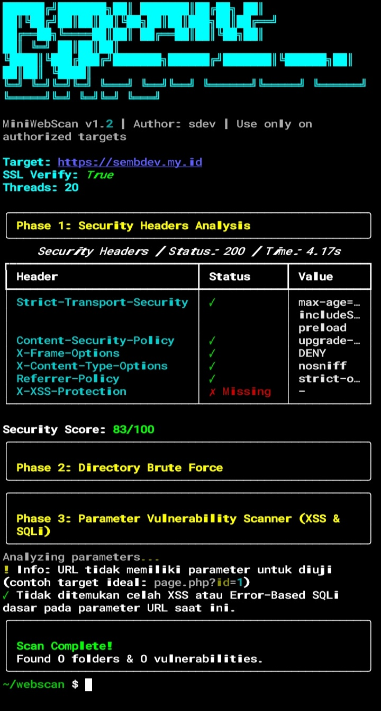
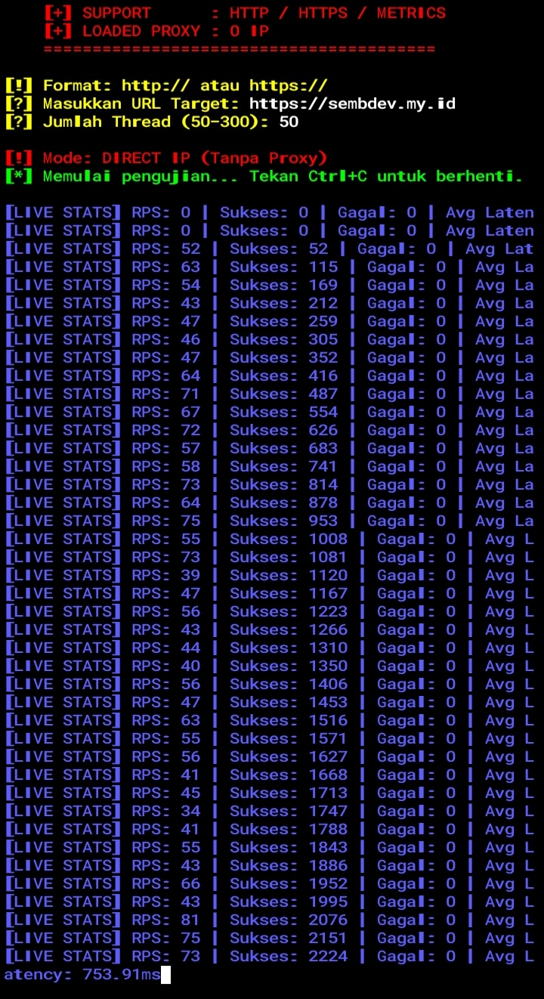
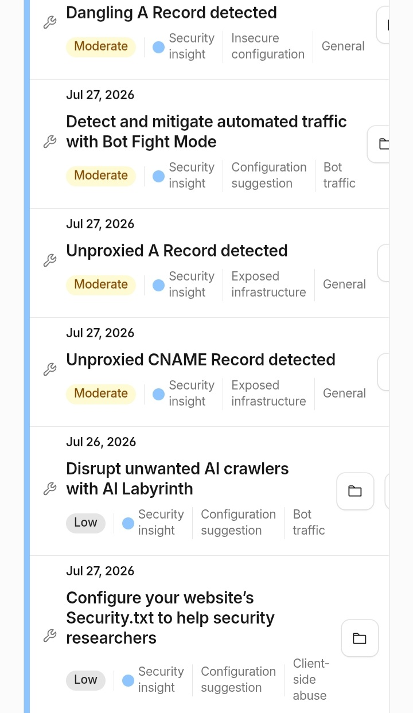
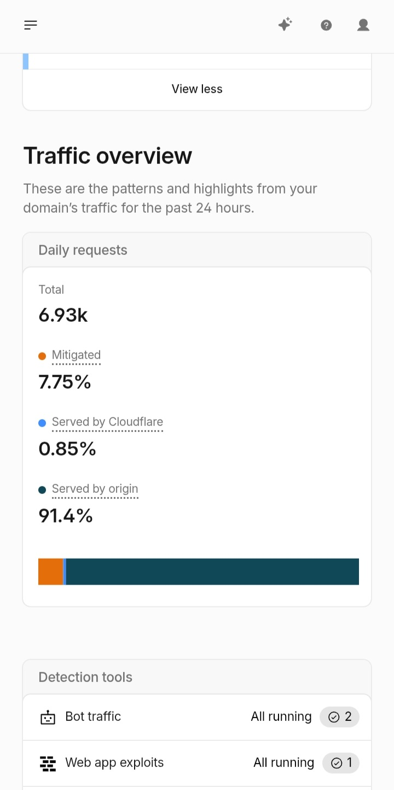

2026-07-27 • Security Audit & Resilience Report
Laporan Pengujian Keamanan Web & Ketahanan Infrastruktur
Dokumentasi pengujian komprehensif pada server target mencakup analisis HTTP security headers, pengujian parameter, simulasi beban trafik tinggi, serta evaluasi mitigasi Edge Protection.

1. Security Headers Assessment
Pengujian konfigurasi HTTP headers & pemindaian celah parameter via MiniWebScan v1.2. Mendapatkan skor keamanan 83/100.

2. Traffic Load & Stress Testing
Simulasi lonjakan trafik berkecepatan tinggi (50–80 RPS) via sdev-dos-lab untuk mengukur stabilitas dan latensi respon server asal.

3. Edge Protection Traffic Analytics
Analisis metrik trafik pada sistem keamanan layer depan. Terdeteksi total 6.93k request dengan efektivitas pemblokiran otomatis sebesar 7.75%.

4. Hardening & Security Insights
Hasil evaluasi postur keamanan jaringan untuk rekomendasi perbaikan, termasuk penyelarasan DNS Proxy dan penyaringan otomatis trafik bot.
2026-07-26 • Tool Installation
Panduan Install SAST & DAST Security Scanner
Panduan instalasi Sdev-Toolkit scanner untuk Termux, Ubuntu, dan Linux CLI...
2026-07-27 • Pentest Write-up
BurpSuite AI Scanner: Integrasi LLM
Mengintegrasikan AI agent ke dalam BurpSuite untuk analisa vulnerability otomatis...
2026-07-27 • Research
High-Speed Fuzzing: Go vs Rust Benchmark
Komparasi performa dan kecepatan HTTP request fuzzing Go vs Rust...
2026-07-27 • Tool Documentation
Go-Fuzzer: Fast Path & Parameter Discovery
Tool discovery cepat berbasis Go untuk mencari hidden directory dan endpoint API...
2026-07-27 • Wireless Security
EvilTwin Lite: Wireless Attack Vector PoC
Riset keamanan jaringan WiFi, rogue AP, dan analisa captive portal...
2026-07-27 • Security Lab
DoS Lab: Stress Testing & Mitigation Analysis
Pengujian ketahanan server web terhadap lonjakan trafik serta evaluasi WAF...
2026-07-27 • Automation
KAI Ticket Automation Bot
Script otomasikasi reservasi tiket kereta cepat berbasis Python & Telegram Bot...
2026-07-27 • Telecom Research
Simulasi EPC 4G LTE Network Security
Eksplorasi arsitektur core network 4G LTE dan analisis keamanan protokol GTP...
2026-07-27 • Security PoC
Anatomi Supply Chain Attack
Riset vektor serangan dependency confusion pada package repository...